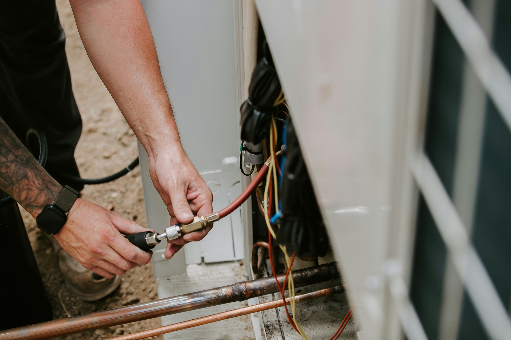
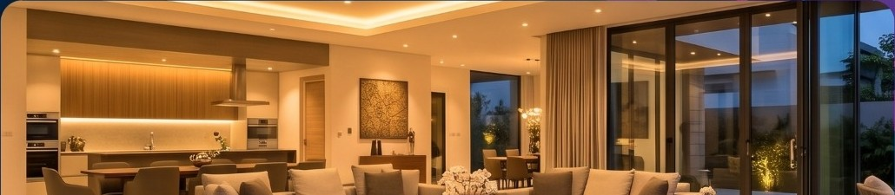
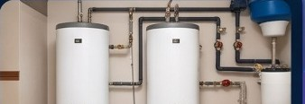
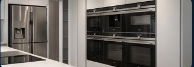

Climatização e HVAC-R
Ar-condicionado, VRF/VRV, refrigeração, diagnóstico e manutenção.

HVAC Sorocaba · Gestão técnica residencial
Tecnologia, experiência e compromisso com a sua residência. Integramos manutenção, diagnóstico e gestão técnica para cuidar do conforto e do funcionamento dos sistemas.
Solicitar avaliação

Conforto em cada ambiente. Integração em cada sistema.Sobre a empresa
A HVAC Sorocaba — Gestão Técnica Residencial é especializada em manutenção e gestão técnica de sistemas residenciais, unindo experiência, tecnologia e soluções personalizadas.
O propósito é prevenir falhas, prolongar a vida útil dos sistemas e proporcionar tranquilidade, com atendimento transparente e profissional.
Uma trajetória de formação e serviço
Ao longo da carreira, o fundador atuou como treinador e formador de equipes para operações técnicas de grande escala envolvendo produtos Samsung, LG e Electrolux. Estruturou linhas de recuperação de produtos recebidos de várias regiões do Brasil, reparados para revenda em outlets. O trabalho ajudava a reduzir o descarte e ampliava o acesso a equipamentos revisados por preços mais acessíveis.
Na Samsung, treinou equipes em São Paulo, na região da Rua Pedroso de Moraes, e em Sorocaba, no Campolim. Também participou da formação de equipes de pós-venda em campo para produtos recuperados e produtos novos em garantia, além de criar instruções técnicas para reparos em campo relacionados a falhas de fábrica.
Em Cuiabá, foi proprietário da Só Frio Refrigeração, empresa que se tornou conhecida na região Centro-Oeste. Hoje trabalha de forma independente e continua ampliando seus conhecimentos em HVAC, sistemas de aspiração central e automação residencial de alto padrão, com planos de avançar para a área de Engenharia e desenvolvimento.
Nossas especialidades
Uma visão integrada para avaliar equipamentos, infraestrutura e automação.
Ar-condicionado, VRF/VRV, refrigeração, diagnóstico e manutenção.
Circuitos, painéis, sensores, placas e monitoramento.
Integração de sistemas, sensores, comandos e supervisão.

Boilers, aquecimento, circulação e sistemas auxiliares.

Refrigeradores, freezers, adegas, lavadoras e outros equipamentos.
Avaliação de desempenho e integração com outros sistemas.
Nosso método de trabalho
Cada etapa ajuda a entender a residência, definir prioridades e registrar o cuidado do início ao fim.
Levantamento dos equipamentos e sistemas da residência.
Avaliação das condições e do funcionamento.
Identificação de anomalias, causas e riscos.
Definição das ações necessárias e da ordem de atendimento.
Intervenções com acompanhamento e testes.
Documentação das intervenções e recomendações.
Planos de manutenção
Opções apresentadas no material institucional. Escopo, disponibilidade e condições comerciais precisam ser confirmados diretamente com a empresa.
Plano 01
Inspeção e prevenção
Plano 02
Gestão técnica integrada
Plano 03
Um ponto de contato para a residência
HVAC Sorocaba · Experiência, confiança e resultados
Solicite uma avaliação técnica e converse sobre as necessidades da sua residência.
Solicitar avaliação